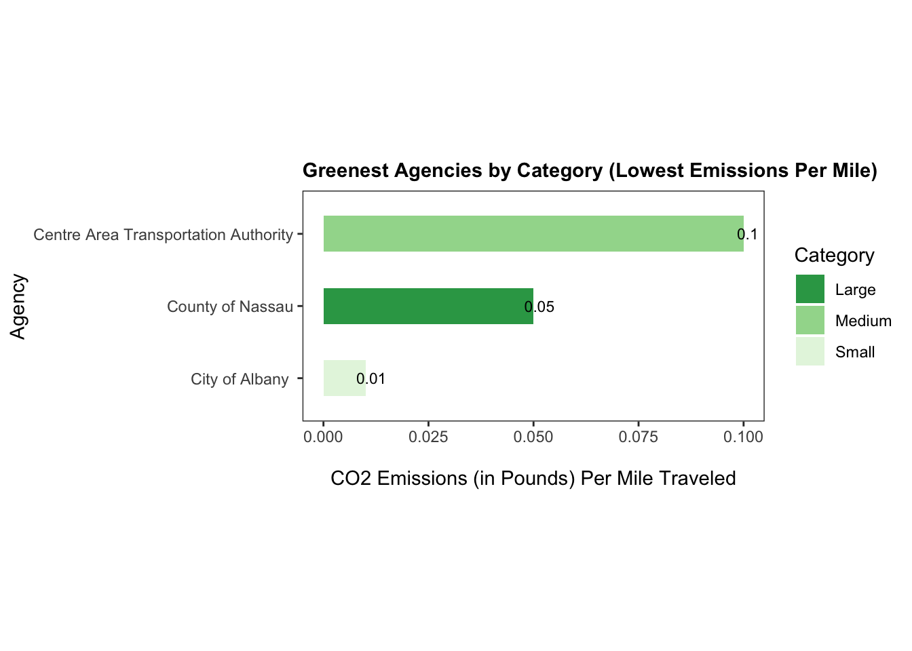
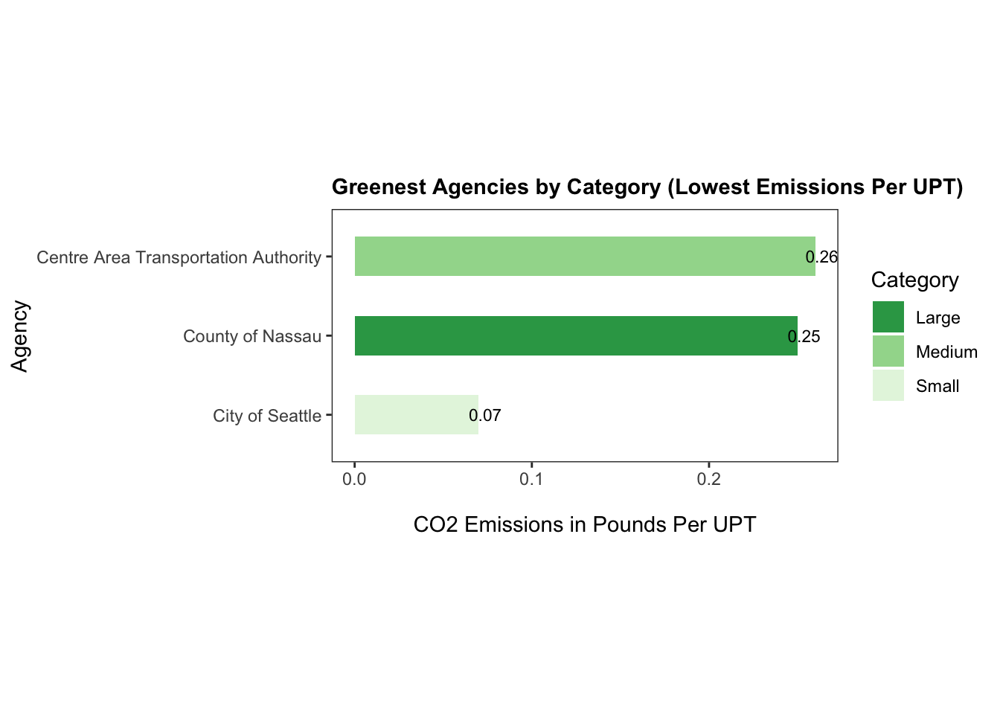
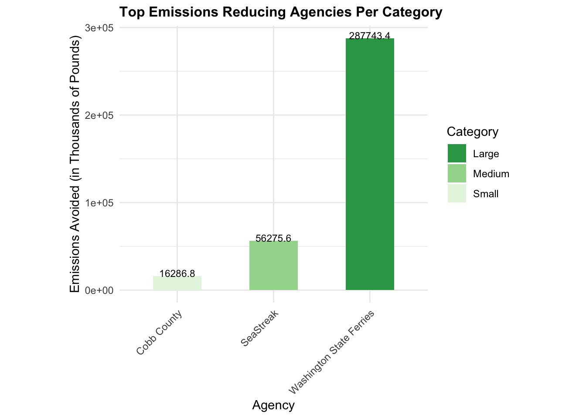
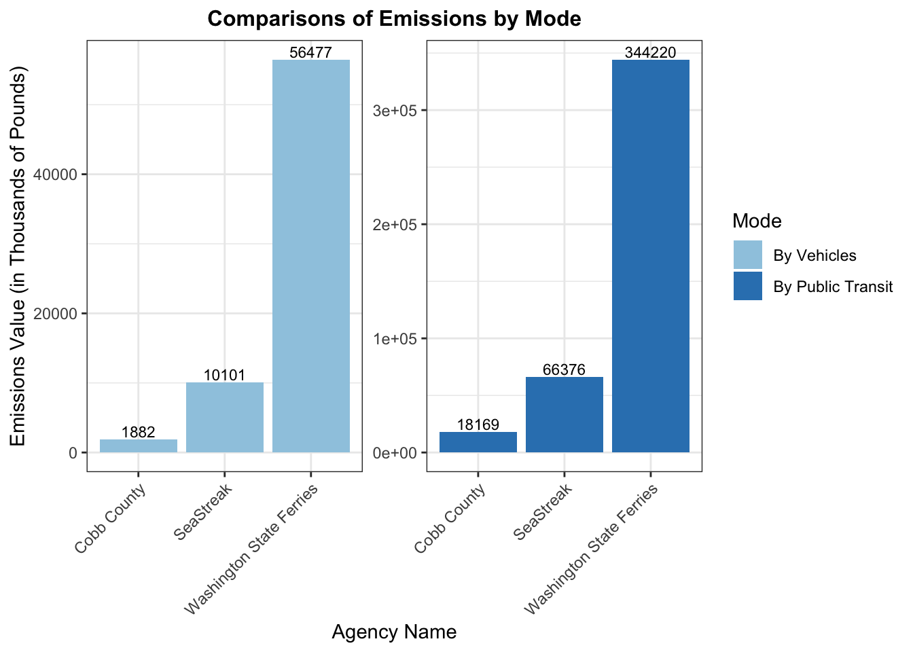

Code
# Load Relevant Packages
library(tidyverse)
library(dbplyr)
library(stringr)
library(ggplot2)
library(DT)
library(scales)
library(gt)
library(janitor)
library(rvest)
library(purrr)Global warming and climate change have become increasingly urgent topics as some extreme events-such as droughts, storms and heatwaves-grow more severe. Human activities, particularly the burning of fossil fuels are intensifying the natural greenhouse effect, accelerating environmental challenges worldwide.
In our Green Transit Challenge, we turn focus to public transportation systems to identify the most environmentally friendly transit agencies operating across the United States. By analyzing their energy efficiency and carbon footprint, we aim to highlight leaders in green mobility and inspire further innovation in eco-friendly transit solutions.
To conduct the competition, we first gathered data from three key sources: EIA_SEP_REPORT, NTD_SERVICE and NTD_ENERGY.
EIA_SEP_REPORT offers insights into the primary energy sources used for electricity in each state, along with their associated electricity price.
NTD_ENERGY contains information on the fuel types used to power public transit services.
NTD_SERVICE provides details on each agency’s mileage and UPT, as well as the city and state in which it operates.
ensure_package <- function(pkg){
pkg <- as.character(substitute(pkg))
options(repos = c(CRAN = "https://cloud.r-project.org"))
if(!require(pkg, character.only=TRUE)) install.packages(pkg)
stopifnot(require(pkg, character.only=TRUE))
}
ensure_package(httr2)
ensure_package(rvest)
ensure_package(datasets)
ensure_package(purrr)
ensure_package(DT)
get_eia_sep <- function(state, abbr){
state_formatted <- str_to_lower(state) |> str_replace_all("\\s", "")
dir_name <- file.path("data", "mp02")
file_name <- file.path(dir_name, state_formatted)
dir.create(dir_name, showWarnings=FALSE, recursive=TRUE)
if(!file.exists(file_name)){
BASE_URL <- "https://www.eia.gov"
REQUEST <- request(BASE_URL) |>
req_url_path("electricity", "state", state_formatted)
RESPONSE <- req_perform(REQUEST)
resp_check_status(RESPONSE)
writeLines(resp_body_string(RESPONSE), file_name)
}
TABLE <- read_html(file_name) |>
html_element("table") |>
html_table() |>
mutate(Item = str_to_lower(Item))
if("U.S. rank" %in% colnames(TABLE)){
TABLE <- TABLE |> rename(Rank = `U.S. rank`)
}
CO2_MWh <- TABLE |>
filter(Item == "carbon dioxide (lbs/mwh)") |>
pull(Value) |>
str_replace_all(",", "") |>
as.numeric()
PRIMARY <- TABLE |>
filter(Item == "primary energy source") |>
pull(Rank)
RATE <- TABLE |>
filter(Item == "average retail price (cents/kwh)") |>
pull(Value) |>
as.numeric()
GENERATION_MWh <- TABLE |>
filter(Item == "net generation (megawatthours)") |>
pull(Value) |>
str_replace_all(",", "") |>
as.numeric()
data.frame(CO2_MWh = CO2_MWh,
primary_source = PRIMARY,
electricity_price_MWh = RATE * 10, # / 100 cents to dollars &
# * 1000 kWh to MWH
generation_MWh = GENERATION_MWh,
state = state,
abbreviation = abbr
)
}
EIA_SEP_REPORT <- map2(state.name, state.abb, get_eia_sep) |> list_rbind()ensure_package(scales)
ensure_package(DT)
EIA_SEP_REPORT |>
select(-abbreviation) |>
arrange(desc(CO2_MWh)) |>
mutate(CO2_MWh = number(CO2_MWh, big.mark=","),
electricity_price_MWh = dollar(electricity_price_MWh),
generation_MWh = number(generation_MWh, big.mark=",")) |>
rename(`Pounds of CO2 Emitted per MWh of Electricity Produced`=CO2_MWh,
`Primary Source of Electricity Generation`=primary_source,
`Average Retail Price for 1000 kWh`=electricity_price_MWh,
`Total Generation Capacity (MWh)`= generation_MWh,
State=state) |>
datatable()Below are some key observations from the preliminary analysis.
Coal, the most polluting fuel source, is the primary energy source in 10 states. When analyzing total carbon dioxide emissions, Indiana has the most carbon-intensive electricity mix, emitted 134,800,179,360 pounds of \(CO_{2}\).
Hawaii is the only state that primarily uses petroleum for electricity generation. It also has the highest retail electricity price at $386 per MWh, meaning it costs $386 to generate 1,000 kWh of electricity.
Although New York produces more electricity than Texas, its energy efficiency results in significantly lower \(CO_{2}\) emissions per kWh. In fact, New York’s energy mix is about seven times cleaner than that of Texas.
state electricity_price_MWh
1 Hawaii 386 CO2_MWh primary_source electricity_price_MWh generation_MWh state
1 1497 Coal 114.9 90046880 Indiana
abbreviation total_CO2_produced
1 IN 134800179360 avg_CO2_emitted_per_MWh
1 805.3703# A tibble: 6 × 2
primary_source n_of_states
<chr> <int>
1 Coal 10
2 Hydroelectric 4
3 Natural gas 26
4 Nuclear 4
5 Petroleum 1
6 Wind 5 CO2_MWh primary_source electricity_price_MWh generation_MWh state
1 1444 Petroleum 386 9194164 Hawaii
abbreviation
1 HIensure_package(readxl)
# Create 'data/mp02' directory if not already present
DATA_DIR <- file.path("data", "mp02")
dir.create(DATA_DIR, showWarnings=FALSE, recursive=TRUE)
NTD_ENERGY_FILE <- file.path(DATA_DIR, "2023_ntd_energy.xlsx")
if(!file.exists(NTD_ENERGY_FILE)){
DS <- download.file("https://www.transit.dot.gov/sites/fta.dot.gov/files/2024-10/2023%20Energy%20Consumption.xlsx",
destfile=NTD_ENERGY_FILE,
method="curl")
if(DS | (file.info(NTD_ENERGY_FILE)$size == 0)){
cat("I was unable to download the NTD Energy File. Please try again.\n")
stop("Download failed")
}
}
NTD_ENERGY_RAW <- read_xlsx(NTD_ENERGY_FILE)ensure_package(tidyr)
to_numeric_fill_0 <- function(x){
replace_na(as.numeric(x), 0)
}
NTD_ENERGY <- NTD_ENERGY_RAW |>
select(-c(`Reporter Type`,
`Reporting Module`,
`Other Fuel`,
`Other Fuel Description`)) |>
mutate(across(-c(`Agency Name`,
`Mode`,
`TOS`),
to_numeric_fill_0)) |>
group_by(`NTD ID`, `Mode`, `Agency Name`) |>
summarize(across(where(is.numeric), sum),
.groups = "keep") |>
mutate(ENERGY = sum(c_across(c(where(is.numeric))))) |>
filter(ENERGY > 0) |>
select(-ENERGY) |>
ungroup()# A tibble: 10 × 16
`NTD ID` Mode `Agency Name` `Bio-Diesel` `Bunker Fuel` `C Natural Gas`
<dbl> <chr> <chr> <dbl> <dbl> <dbl>
1 50035 MB Central County Tra… 0 0 0
2 40159 CR Regional Transport… 0 0 0
3 10183 FB Woods Hole, Martha… 0 0 0
4 10007 DR Berkshire Regional… 0 0 0
5 10066 CB Green Mountain Tra… 0 0 0
6 35 FB Washington State F… 1320226 0 0
7 20230 FB Barnegat Bay Decoy… 0 0 0
8 3 MB Pierce County Tran… 0 0 1036567
9 24 VP Clark County Publi… 0 0 0
10 90173 MB Transit Joint Powe… 0 0 0
# ℹ 10 more variables: `Diesel Fuel` <dbl>, `Electric Battery` <dbl>,
# `Electric Propulsion` <dbl>, Ethanol <dbl>, Methonal <dbl>, Gasoline <dbl>,
# Hydrogen <dbl>, Kerosene <dbl>, `Liquified Nat Gas` <dbl>,
# `Liquified Petroleum Gas` <dbl> [1] "DR" "FB" "MB" "SR" "TB" "VP" "CB" "RB" "LR" "MG" "CR" "AR" "TR" "HR" "YR"
[16] "IP" "PB" "CC"# Recode the `Mode` column
NTD_ENERGY <- NTD_ENERGY |>
mutate (Mode = case_when(
Mode == "AR" ~ "Alaska Railroad", Mode == "CB" ~ "Commuter Bus",
Mode == "CC" ~ "Cable Car", Mode == "CR" ~ "Commuter Rail",
Mode == "DR" ~ "Demand Response", Mode == "FB" ~ "Ferryboat",
Mode == "HR" ~ "Heavy Rail", Mode == "IP" ~ "Inclined Plane",
Mode == "LR" ~ "Light Rail", Mode == "MB" ~ "Bus",
Mode == "MG" ~ "Monorail and Automated Guideway", Mode == "PB" ~ "Publico",
Mode == "RB" ~"Bus Rapid Transit", Mode == "SR" ~ "Streetcar Rail",
Mode == "TB" ~ "Trolleybus", Mode == "TR" ~ "Aerial Tramways",
Mode == "VP" ~ "Vanpool", Mode == "YR" ~"Hybrid Rail"
)
)NTD_SERVICE_FILE <- file.path(DATA_DIR, "2023_service.csv")
if(!file.exists(NTD_SERVICE_FILE)){
DS <- download.file("https://data.transportation.gov/resource/6y83-7vuw.csv",
destfile=NTD_SERVICE_FILE,
method="curl")
if(DS | (file.info(NTD_SERVICE_FILE)$size == 0)){
cat("I was unable to download the NTD Service File. Please try again.\n")
stop("Download failed")
}
}
NTD_SERVICE_RAW <- read_csv(NTD_SERVICE_FILE)First, NTD_SERVICE table does not include transit information for all states. For example, it does not cover California, Arizona, Hawaii, and others. Among the listed agencies, MTA New York Transit recorded the highest number of unlinked passenger trips (UPT) in 2023, totaling approximately 2.63 billion, with an average trip length of 3.64 miles. Meanwhile, MTA Long Island Rail Road has the longest average trip length at 24.26 miles. Among the states included in the NTD_SERVICE dataset, New Hampshire had the lowest total public transit mileage, with an aggregate of 3,749,892 miles traveled.
# A tibble: 1 × 6
Agency City State UPT MILES `NTD ID`
<chr> <chr> <chr> <dbl> <dbl> <dbl>
1 MTA New York City Transit Brooklyn NY 2632003044 9591253658 20008# A tibble: 1 × 3
total_miles total_n_trips avg_trip_length
<dbl> <dbl> <dbl>
1 9591253658 2632003044 3.64# A tibble: 1 × 4
Agency total_n_trips total_miles avg_trip_length
<chr> <dbl> <dbl> <dbl>
1 MTA Long Island Rail Road 83835706 2033685836 24.3# A tibble: 1 × 2
State total_miles
<chr> <dbl>
1 NH 3749892 state.name state.abb
1 Arizona AZ
2 Arkansas AR
3 California CA
4 Colorado CO
5 Hawaii HI
6 Iowa IA
7 Kansas KS
8 Louisiana LA
9 Missouri MO
10 Montana MT
11 Nebraska NE
12 Nevada NV
13 New Mexico NM
14 North Dakota ND
15 Oklahoma OK
16 South Dakota SD
17 Texas TX
18 Utah UT
19 Wyoming WYNow we can compute the total emissions associated with each Agency and Mode pair.
Be aware that there are two types of fuel sources:
Non-electric sources(e.g,Bio-Diesel, Bunker Fuel) are measured in gallons.
Electric sources(Electric Battery, Electric Propulsion) are measured in kWh.
For example, to calculate the total emissions of \(CO_{2}\) from petroleum usage, we multiply the coefficient \(12.68\) by the number of gallons of petroleum burned.
Since there is no recorded consumption of Bunker Fuel, Ethanol or Kerosene, no conversions are needed for these fuel sources.
# Join three tables: `NTD_SERVICE`, `NTD_ENERGY` and `EIA_SEP_REPORT`
merged_df <- NTD_SERVICE |>
left_join(NTD_ENERGY, by = "NTD ID") |>
left_join(EIA_SEP_REPORT, by = c("State" = "abbreviation")) |>
select(everything(), -"Agency Name", -"NTD ID", -"primary_source",
-"electricity_price_MWh", - "generation_MWh", -"state") # Task 5: Calculate CO2 emission for each energy source
merged_df <- merged_df |>
mutate(
`Bio-Diesel CO2 Emissions` = `Bio-Diesel` * 22.45, # 22.45 pounds per gallon
`C Natural Gas CO2 Emissions` = `C Natural Gas` * 0.133681 * 120.85/1000, # 1 gallon = 0.133681 cubic feet
`Diesel Fuel CO2 Emissions` = `Diesel Fuel` * 22.45,
`Electric Battery CO2 Emissions` = `Electric Battery`/1000 * CO2_MWh, # Electricity usage was quoted in kWh
`Electric Propulsion CO2 Emissions` = `Electric Propulsion`/1000 * CO2_MWh,
`Gasoline CO2 Emissions` = `Gasoline` * 18.73, # Finished motor gasoline 18.73 pounds of CO2 per gallon
`Hydrogen CO2 Emissions` = 0,
`Liquified Nat Gas CO2 Emissions` = `Liquified Nat Gas` * 0.133681 * 120.85/1000, # 1 gallon = 0.133681 cubic feet
`Liquified Petroleum Gas CO2 Emissions` = `Liquified Petroleum Gas` * 12.68, # Propane
`Total Emissions` = `Bio-Diesel CO2 Emissions` + `C Natural Gas CO2 Emissions` +
`Diesel Fuel CO2 Emissions` + `Electric Battery CO2 Emissions` + `Electric Propulsion CO2 Emissions` +
`Gasoline CO2 Emissions` + `Liquified Nat Gas CO2 Emissions` + `Liquified Petroleum Gas CO2 Emissions`
)To ensure comparability across agencies, we classify them into Small, Medium and Large categories based on MILES.
We created a categorical variable, Category, to classify agencies as follows:
Extremely Small: Agencies with annual mileage below 1 million are excluded from the competition.
Small: Agencies with annual mileage between 1 million and 10 million miles
Medium: Agencies with annual mileage between 10 million and 24,709,196 miles
Large: Agencies with annual mileage above 24,709,196 miles.
# To classify agencies into `Small`, `Medium` and `Large`
transit_agency_tiers <- merged_df |>
filter(MILES >= 1000000) |> # Filter out extremely small agencies
mutate(
Category = case_when(
MILES < 10000000 ~ "Small",
10000000 <= MILES & MILES <= 24709196 ~ "Medium",
TRUE ~ "Large")
) |>
select("Agency", "City", "State", "UPT", "MILES", "Category") |>
distinct()After we classifying the agencies into three tiers, we normalized total emissions to ensure a fair competition. This normalization is essential as it accounts for the number of trips and mileage, allowing for a more accurate assessment of each agency’s environment impact.
# Task 6
normalized_emissions <- merged_df |>
group_by(Agency) |>
summarize(`Total Emissions in Pounds` = sum(`Total Emissions`, na.rm = TRUE),
`Emissions Per UPT` = sum(`Total Emissions`)/UPT, # Calculate emissions per UPT
`Emissions Per Mile` = sum(`Total Emissions`)/MILES # Calculate emissions per mile traveled
) |>
mutate(
across(c(`Total Emissions in Pounds`, `Emissions Per UPT`, `Emissions Per Mile`), # Round the values to 2nd place
~ round(.x, 2))
) |>
distinct() |>
as_tibble()These agencies have emerged as the champions of sustainability in their respective categories. County of Nassau and Centre Area Transportation Authority dominate their tiers, leading in the lowest emissions per mile and lowest emissions per UPT, respsetively.
Among small agencies, the City of Albany outperforms its peers with the lowest \(CO_{2}\) emissions per mile. Meanwhile, the City of Seattle takes the spot for lowest \(CO_{2}\) emissions per UPT, showcasing its commitment to sustainable transit.
# Task 7
greenest_agencies_per_mile <- transit_agency_tiers |>
left_join(normalized_emissions, by = "Agency") |>
group_by(Category) |>
slice_min(`Emissions Per Mile`, n = 1) |>
select("Agency", "Category", "Emissions Per Mile") |>
mutate(
Agency = ifelse(str_detect(Agency, ","), # Shorten agency names to fit plot area
str_extract(Agency, "^[^,]+"),
Agency))
greenest_agencies_per_mile |>
as_tibble()# A tibble: 3 × 3
Agency Category `Emissions Per Mile`
<chr> <chr> <dbl>
1 "County of Nassau" Large 0.05
2 "Centre Area Transportation Authority" Medium 0.1
3 "City of Albany " Small 0.01ggplot(greenest_agencies_per_mile, aes(x = `Emissions Per Mile`,
y = reorder(Agency, `Emissions Per Mile`),
fill = Category)) +
geom_bar(stat = "identity", width = 0.5) +
geom_text(aes(label = round(`Emissions Per Mile`, 2)),
hjust = 0.3, size = 3) +
labs(x = "CO2 Emissions (in Pounds) Per Mile Traveled",
y = "Agency",
title = "Greenest Agencies by Category (Lowest Emissions Per Mile)"
) +
scale_fill_manual(values = c("#31a354", "#a1d99b", "#e5f5e0")) +
theme_bw() +
theme(plot.title = element_text(hjust = 0, face = "bold", size = 11), #Move the title to the left and bold the title
aspect.ratio = 0.5,
axis.title.x = element_text(margin = margin(t = 14)),
panel.grid.major = element_blank(),
panel.grid.minor = element_blank()
)
greenest_agencies_per_upt <- transit_agency_tiers |>
left_join(normalized_emissions, by = "Agency") |>
group_by(Category) |>
slice_min(`Emissions Per UPT`, n = 1) |>
select("Agency", "Category", "Emissions Per UPT") |>
mutate(
Agency = ifelse(str_detect(Agency, ","),
str_extract(Agency, "^[^,]+"),
Agency))ggplot(greenest_agencies_per_upt, aes(x = `Emissions Per UPT`,
y = reorder(Agency, `Emissions Per UPT`),
fill = Category)) +
geom_bar(stat = "identity", width = 0.5) +
geom_text(aes(label = round(`Emissions Per UPT`, 2)),
hjust = 0.3, size = 3) +
labs(x = "CO2 Emissions in Pounds Per UPT",
y = "Agency",
title = "Greenest Agencies by Category (Lowest Emissions Per UPT)"
) +
scale_fill_manual(values = c("#31a354", "#a1d99b", "#e5f5e0")) +
theme_bw() +
theme(plot.title = element_text(hjust = 0, face = "bold", size = 11), #Move the title to the left and bold the title
aspect.ratio = 0.5,
axis.title.x = element_text(margin = margin(t = 14)),
panel.grid.major = element_blank(),
panel.grid.minor = element_blank()
)
In 2023, the CAFE standard for passenger cars was 43.7 miles per gallon(mpg). We used this benchmark to estimate the potential emissions avoided by each agency.
Regardless of agency size, as measured by annual mileage traveled, the reduction in emissions is primarily due to the use of a slightly more efficient and cleaner energy source ⛽. By transitioning to a higher-efficiency standard, the total pounds of pollution produced could be significantly reduced.
Among all agencies, Washington State Ferries🚢 would have achieved the largest emissions reduction if its 2023 mileage had been replaced by passenger vehicle travel. Our analysis estimates that it could have avoided approximately 287,743,410 pounds of \(CO_{2}\) emissions.
Washington State Ferries primarily relies on diesel fuel, which emits 22.45 pounds of \(CO_{2}\) per gallon burned. If its fuel consumption aligned with the CAFE standard, it could have reduced emissions by 3.72 pounds of \(CO_{2}\) per gallon.
# Calculate the emissions avoided if replaced by passenger vehicles
most_emissions_avoided <- transit_agency_tiers |>
mutate(`Total Emissions if Replaced by Vehicles` = round(MILES/43.7 * 18.73, 2)) |> # 18.73 pounds of CO2 emitted per gallon of motor gasoline
left_join(normalized_emissions, by = "Agency") |>
mutate(
`Possible Emissions Avoided` = `Total Emissions in Pounds` - `Total Emissions if Replaced by Vehicles`
) |>
select(-`Emissions Per UPT`, -`Emissions Per Mile`) |>
group_by(Category) |>
slice_max(`Possible Emissions Avoided`, n = 1) |>
select("Agency", "Category", `Total Emissions if Replaced by Vehicles`,
`Total Emissions in Pounds`, `Possible Emissions Avoided`) |>
mutate(
Agency = ifelse(str_detect(Agency, ","), # Shorten agency names to fit plot area
str_extract(Agency, "^[^,]+"),
Agency))# Plot the top emissions reducing agencies
ggplot(most_emissions_avoided, aes(x = Agency, y = `Possible Emissions Avoided`/1000, fill = Category)) +
geom_bar(stat = "identity", width = 0.5) +
geom_text(aes(label = round(`Possible Emissions Avoided` / 1000, 1)),
vjust = 0.1, size = 3) +
labs(title = "Top Emissions Reducing Agencies Per Category",
x = "Agency",
y = "Emissions Avoided (in Thousands of Pounds)",
fill = "Category") +
scale_fill_manual(values = c("#31a354", "#a1d99b", "#e5f5e0")) +
theme_minimal() +
theme(axis.text.x = element_text(angle = 45, hjust = 1),
aspect.ratio = 0.9,
plot.title = element_text(hjust = 0, # Move the title to the left
face = "bold",
size = 12)
)
ggplot(most_emissions_avoided_long, aes(x = reorder(Agency, `Emissions Value`),
y = `Emissions Value`/1000, fill = Mode)) +
geom_bar(stat = "identity", position = "dodge") + # Grouped bars for different modes
geom_text(aes(label = round(`Emissions Value`/1000, 0)),
position = position_dodge(width = 0.9),
vjust = -0.2, size = 3) +
facet_wrap(~ Mode, scales = "free_y") + # Facet by Mode
labs(x = "Agency Name",
y = "Emissions Value (in Thousands of Pounds)",
title = "Comparisons of Emissions by Mode") +
scale_fill_manual(values = c("#9ecae1", "#3182bd"), # Custom colors for different modes
labels = c("By Vehicles", "By Public Transit")) +
theme_bw() +
theme(axis.text.x = element_text(angle = 45, hjust = 1),
strip.text = element_blank(), # Hide facet title
plot.title = element_text(hjust = 0.5, # Move the title to the middle
face = "bold",
size = 12))
For our third award, we narrowed the competition to a specific transit mode-heavy rail. To determine the most energy-efficient operators, we analyzed emissions per mile traveled, a key metric that reflects environmental impact relative to service distance.
In a fiercely contested battle, two agencies emerged as the greenest heavy rail operators, tying for the top stop. However, when factoring in the cost of electricity generation, MTA New York City Transit pulls ahead as the most cost-effective leader, saving $36 per 1,000 kWh compared to its competitor. This crucial edge in efficiency gives MTS the competitive advantage in sustainable heavy rail transit.
# A tibble: 2 × 3
Agency CO2_MWh `Emissions Per Mile`
<chr> <dbl> <dbl>
1 MTA New York City Transit 522 0.08
2 Maryland Transit Administration, dba: MTA 558 0.08The Fourth Award goes to the highest CO2 emitted - a stark reminder of the environmental challenges ahead.
We awarded MTA New York City Transit with the highest \(CO_{2}\) emissions in 2023.
To define the “worst”, we focused on the most straightforward metric-total emissions. By examining the total emissions, we get a clear picture of the environment toll.
In this case, MTA New York City Transit leads in emissions with 807,152,731 pounds of \(CO_{2}\) produced in 2023-an undeniable reminder of the work still needed to reduce the carbon footprint of large transit systems.
# A tibble: 1 × 2
Agency `Total Emissions`
<chr> <dbl>
1 MTA New York City Transit 807152731.Indeed, it is somewhat contradictory that MTA New York City Transit is considered the greenest in terms of its heavy rail service, yet at the same time, it produced the most \(CO_{2}\) across all the public transit services it operates.
As one of the busiest city in the world, we must acknowledge that it serves millions of passengers daily, playing a crucial role in reducing the city’s overall carbon footprint compared to individual vehicle use.
url <- "https://www.eia.gov/environment/emissions/co2_vol_mass.php"
# Read the webpage
webpage <- read_html(url)
# Get table header
header_rows <- webpage |>
html_node("table thead") |>
html_nodes("tr")
# Extract the first_level header
first_level_header <- header_rows[1] |>
html_nodes("th") |>
html_text(trim = TRUE)
# Extract the second-level header
second_level_header <- header_rows[2] |>
html_nodes("th") |>
html_text(trim = TRUE)
# Combine the two headers
final_header <- mapply(function(x, y) paste(x, y, sep = " "), first_level_header, second_level_header)
# Extract the table
table_node <- webpage |>
html_node("table")
table_body <- table_node |>
html_node("tbody")
# Extract all the rows inside the table and it's a list of length 33.
rows <- table_body |>
html_nodes("tr")
# Define a function to handle both section header rows and regular rows
process_row <- function(row) {
row_data <- row |> html_nodes("td") |> html_text(trim = TRUE)
# Check if it is a section header row
if(length(row_data) == 1){
row_data <- c(row_data, rep(NA, 4))
}
return(row_data)
}
# Iterate over the list of rows and apply the function to process each table row
table_data <- lapply(rows, process_row)
# Combine rows
CO2_emissions_coef_by_fuel <- map_dfr(table_data, ~ as_tibble(t(.x)))
colnames(CO2_emissions_coef_by_fuel) <- final_header
CO2_emissions_coef_by_fuel <- CO2_emissions_coef_by_fuel |>
mutate(
`Pounds CO2 Per Million Btu` = as.numeric(`Pounds CO2 Per Million Btu`),
`Kilograms CO2 Per Million Btu` = as.numeric(`Kilograms CO2 Per Million Btu`)
)
CO2_emissions_coef_by_fuel |>
datatable()